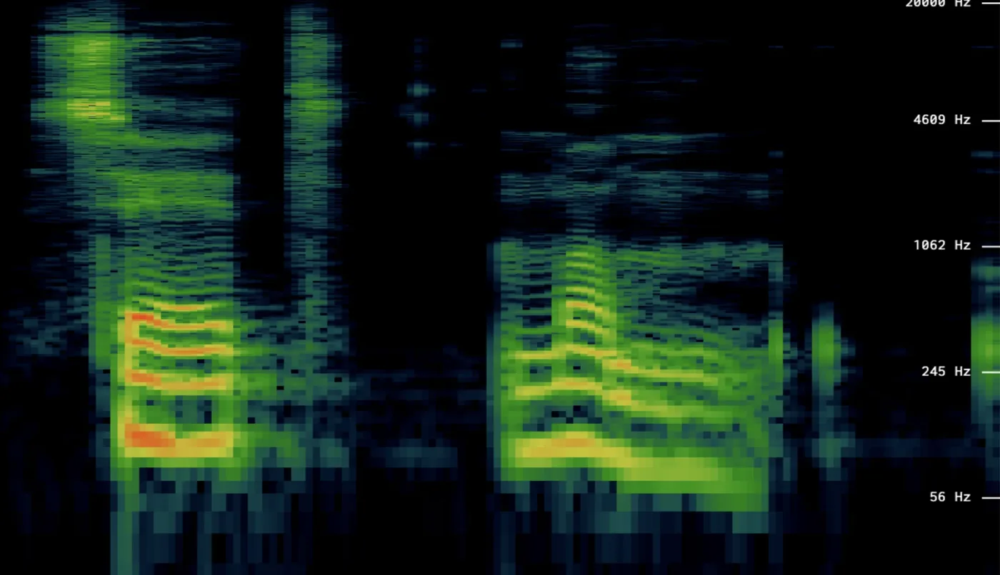

Assignment 2 مكتوب فيه «J&M Ch. 16.1–16.2». بس في نسخة الكتاب اللي على النت دلوقتي، الـ 16.1 هو «الـ ASR task» (حطيته في Lecture 1)، والـ 16.2 عن الـ CNNs. والكلام اللي بيطابق الـ lecture دي هو 15.1 لـ 15.4، وده اللي هنا. ولو الـ PDF اللي عندك على Moodle فيه ترقيم تاني، الأولوية ليه.
الـ phone = صوت كلام واحد. والـ IPA هي الأبجدية الدولية لكل اللغات. والكتاب بيستخدم ARPAbet: رموز ASCII للإنجليزي الأمريكاني، يعني سهلة على الكمبيوتر. مثلاً cat = [k ae t]، وparakeet = [p ae r ax k iy t].
كل consonant بيتوصف برقمين: فين بيحصل التضييق (place of articulation)، وإزاي (manner). دوس على أي خانة:
| الحالة | الـ sampling | الـ sample size | ليه |
|---|---|---|---|
| دقة كاملة للكلام | 20 kHz | – | معظم معلومات الكلام تحت 10 kHz، والـ Nyquist بيقول ضعفها. |
| التليفون | 8 kHz | 8-bit (من −128 لـ 127) | شبكة التليفون بتعدّي أقل من 4 kHz بس. |
| mic عادي | 16 kHz | 16-bit (من −32768 لـ 32767) | الـ standard في الـ ASR. |
μ-law: ضغط log بيتستخدم في التليفون، عشان ودن البني آدم أحسس للأصوات الضعيفة من القوية. فبيدّي الـ values الصغيرة دقة أكتر، على حساب الكبيرة:
وعلى الكلام ده جت أسئلة في امتحانات قبل كده.

الامتحان مش جايب حل نموذجي. ده تحليلي للصورة بقواعد المحاضرة.
مفيش period واحد نطلّع منه f = 1/T. بنستخدم Fourier transform (عملياً DFT/FFT على frame قصيرة بعد الـ window). الـ signal بتتحلل لمجموع sinusoids، والـ spectrum بيقول قد إيه طاقة عند كل frequency. ولو الـ signal بتتغير مع الوقت (زي الكلام)، اعمل ده لكل frame: يطلع الـ spectrogram. ونوع الطاقة بيوصف الصوت: الـ /s/ مثلاً طاقته موزعة على frequencies عالية، ومن غير F0.
| المطلوب | الأداة | خد بالك |
|---|---|---|
| تحميل الصوت | librosa.load(path, sr=None) | لو ما كتبتش sr=None، الـ librosa هتعمل resample لـ 22050 من غير ما تقولك. |
| RMS intensity | librosa.feature.rms | استخدم نفس الـ frame والـ hop بتوع الـ F0، عشان المحور يتطابق. |
| F0 contour و voiced/unvoiced | librosa.pyin | بيرجّع voiced_flag جاهز، والـ F0 بيبقى NaN في الحتت الـ unvoiced (التقطيع اللي في الـ contour). |
| F1 و F2 | LPC (librosa.lpc وroots) أو Praat | الـ librosa مفيهاش formant tracker جاهز. اختار حتة ثابتة في نص الـ vowel. |
| Downsample لـ 8k و4k | librosa.resample | عند 4 kHz، الـ Nyquist بيبقى 2 kHz بس، فـ F2 بتاع الـ vowels الأمامية (≈ 2.3 kHz) بيضيع. |
| Requantize لـ 8 و4 bit | np.round(x·(2^(b−1)−1))/(2^(b−1)−1) | 4-bit = 16 مستوى بس، والـ quantization noise هيبقى مسموع جداً. |
والسؤال الأخير في الـ assignment (البوظان بيبقى مسموع إمتى، والـ ASR بيقع إمتى) هو نفس شكل أسئلة «خد موقف» في الامتحان: توقّع النتيجة الأول، وبعدين قيس.
نلخّص Lecture 2.